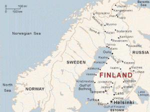
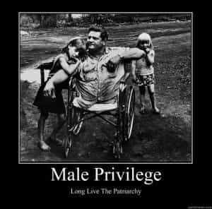

< < < Back
Finland Warns 900,000 Men About War Conscription; Feminists Remain Silent – Return Of Kings
Finnish feminists yet again have no answer. For years questioned on why they fail to speak out about only men being conscripted to serve in the military, they have continued their silence after 900,000 Finnish men (from a total population of just 5.5 million) were sent correspondence in May warning them about their patriotic obligations in the event of war.
As a former territorial possession of the tsarist Russian Empire and target of serious and bloody Soviet aggression in the 1930s and 40s, Finland is acutely sensitive to Russian actions, perceived and otherwise, in relation to Ukraine now and flashpoints such as Georgia in the past.

Finland is one of those wonderful “equal” Nordic societies that either only conscripts men (Finland and Denmark) or for decades only conscripted men (Sweden and Norway). Sweden, to its eternal shame, simply abolished male-only conscription and moved to a professional army, bypassing any explanation as to why Swedish women, who had insisted on a radical form of equality since the 1970s, were never made to serve their country in any capacity, military or otherwise.
Norway has adopted measures for female conscription, but in the sense that women deserve some kind of national praise for finally pulling even part of their weight on this matter.
Let’s be fair here: I recognize the imperative of a small country having the best means of national defense. Finnish feminists, pig-headed but not completely bereft of brain cells associated with common sense, know that the comparison between having a “battle-ready” force of 285,000 mostly male professional soldiers and reservists or the same amount with a 50/50 gender split is laughable.
It’s a different story, though, to incessantly conjure up the specter of the so-called patriarchy when females have the privilege of not having their studies, work or general life interrupted by compulsory military service.
When do females sacrifice or put themselves on the line for men?

Danish Prime Minister Helle Horning-Schmidt constantly references “sexism” to create political capital, but ignores the obvious elephant in the room: male-only conscription in Denmark. In typical Orwellian Newspeak, women in Denmark can paradoxically “volunteer” for conscription.
Think beyond just conscription. When James Holmes killed 12 people and injured dozens more in the 2012 “Batman Dark Knight” cinema shootings in Aurora, Colorado, three men died protecting their female partners. I assume that many more men literally put themselves in the way of multiple bullets to protect a woman.
I do not question and vehemently affirm the bravery of these men. But, aside from maternal cases and a few others, women simply do not put themselves in harm’s way to protect men, at least not anywhere near the rate of men trying to save women.
Whether war comes or not, Finnish men are expected, without reward or bare acknowledgment and appreciation, to underwrite the tranquility, safety, prosperity and peace of mind of Finnish women. Fundamentally, female political and academic elites in Finland have clawed every advantage they can for women, whilst dispensing with any notion of addressing the plethora of issues that hit men exclusively or at a minimum much harder than women. Male-only conscription? Pass. Male suicide? Nah. Child custody? Next decade (or century), please.
Finland’s aging population would make compulsory female civilian service a perfect opportunity for Finnish feminists to show their equality credentials. If men must serve 9-12 months, why not make women perform duties for the elderly over a similar timeframe?
We avoid the deep quagmire of the biological differences between men and women, and allow both genders to perform tasks necessary for the nation. Perhaps when hell freezes over such a common sense approach would not only take precedence but be enforced. Men in Finland today risk incarceration and a lifetime of criminal stigma for refusing to do what women their age are always spared.
Finland’s Ombudsman for Minorities is deliberately advocating for female privilege
She didn’t even have the university degree required to get her position as Ombudsman for Minorities, but that hasn’t stopped Eva Biaudet from helping to spread her pernicious brand of female privilege.
Meet Eva Biaudet, Finland’s First SJW, and a microcosm for why 900,000 men can get conscription warnings without the slightest peep from the “equality-loving” feminist community. The recipient of massive privilege for getting the coveted job of Ombudsman for Minorities without the requisite tertiary qualifications, she has applied herself to politically hunting police after vague accusations of racial profiling against them.
Trying to apply the law equally to groups such as gypsies risks the ire of professional nuisances like Biaudet. Her most ridiculous antics have considered men, specifically her radical feminist approach to men corralled into joining the military.
This exchange about Eva Biaudet’s response to a question on male-only conscription by a new recruit is by far my favorite one across all of Reddit. It encapsulates perfectly the logical contradictions and self-entitlement of the women of Biaudet’s repulsive ilk. The direct link to the video can be found here, and the Reddit discussion provides, to my knowledge, a very good translation of the encounter on a Finnish political Q&A show.
Basically, in her own words, conscription is fine to Biaudet because only half of the population must serve. And, jackpot, it’s not her half, the vagina-possessing one. Yippee! Also, there’s that massive obstacle of the sub-€100 cost for women to take a military medical exam (which could be just waived, you moron, if you applied yourself a scant 2% to its repeal). Already cognitively lacking, Biaudet completely ignoring the young man’s astute question is par for the course.
Die for us women, men
So true, but I have no other words.
At the crux of the matter, men are disposable to women. You have heard it before and we all need to hear it again. Finland’s men found that out once more when they got letters meant only for them, not their sisters, girlfriends, wives, daughters or friends. If Russia were to ever cross the border in the most harmless, piecemeal or trolling fashion, the shrieks of hysteria for men to defend them from Finnish feminists would be shriller than the sky is blue.
It is easy to score political and social hit points in challenging these sorts of feminists from time to time. But that is not nearly enough. The arguments we craft must be delivered again and again. Because if the shit hits the fan in far-flung Northern Europe, it is Finnish men, like the men in the Aurora, Colorado cinema, who will be expected to take the fall and die.
Read More: 9 Things Every Guy Should Know About Finland (And Its Girls)


{kind=link}
{kind=link}